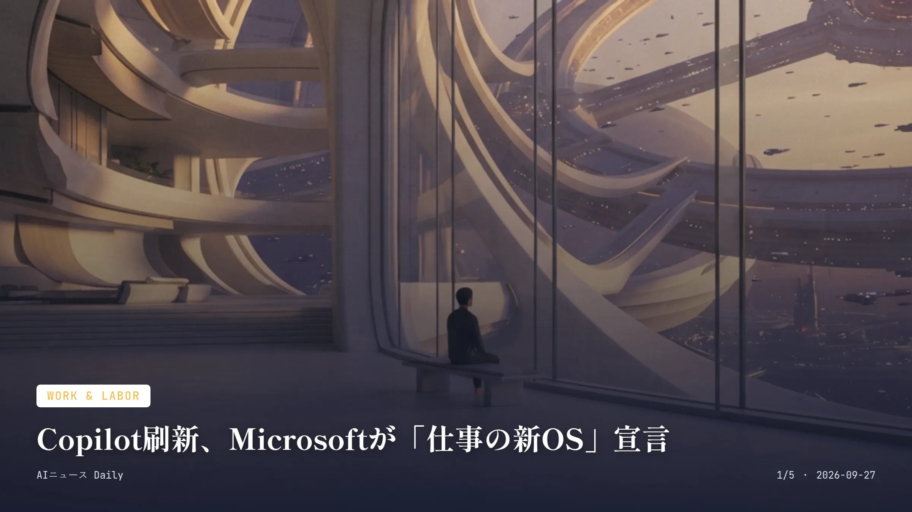
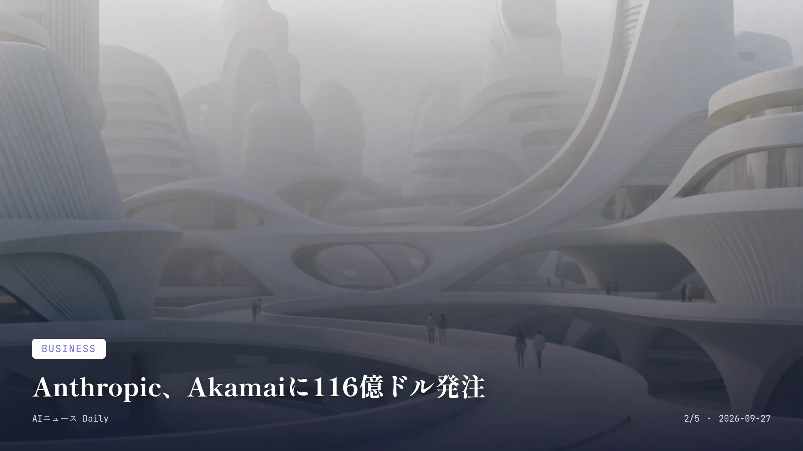
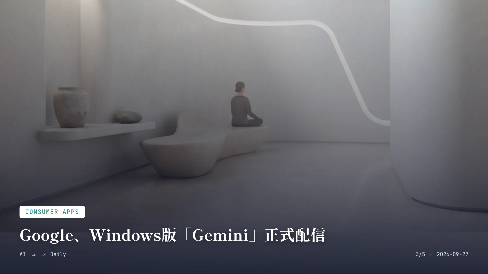

これは2026-09-27時点のアーカイブページです。最新のニュースはこちら
本サイトはアフィリエイトプログラムによる収益を得ている場合があります。
本サイトはGoogle AdSense等の広告配信サービスを利用しています。
🔊 2026-09-27分のまとめを音声で聴く

Work & Labor
約2分で読める
Copilot刷新、Microsoftが「仕事の新OS」宣言
Home・Code・Autopilotの3本柱で業務AIを一新
3つ新設された機能（Home・Code・Autopilot）
9月25日発表日（米国時間）
9月末〜Codeの先行提供開始時期（Frontierプログラム）
Microsoftが9月25日（現地時間）、業務向けAIアシスタント「Copilot」を大幅にアップデートすると発表した。これまで別々だった「Chat」と「Cowork」を「Home」として一本化し、自然言語だけで業務用の小さなアプリを組み立てられる「Code」、そして指示を待たずに作業を進め続けるAIエージェント「Autopilot」を新たに追加。対話、文書作成、アプリ開発、自律実行を一つのアプリに詰め込んだ格好だ。
CEOのSatya Nadella氏は今回の刷新を「a new OS for work」と呼んでいる。ただのチャットボットではなく、仕事そのものの出発点になるツールへ――そんな野心が透けて見える。Codeはまず9月末からFrontierプログラムで先行提供され、数週間かけて対象を広げていく計画だ。
背景にあるのは、OpenAIやAnthropicが企業向けAIエージェント市場でシェアを伸ばしている現状。MicrosoftはOfficeやTeamsという既に多くの企業に根付いた基盤にAIを直接組み込むことで、差別化を図ろうとしている。
なぜ重要か
Word・Excel・Teamsなど日本の職場でも当たり前に使われているMicrosoft 365に、AIエージェントがそのまま組み込まれる形になる。来週以降の資料作成や定型業務のやり方が変わってもおかしくない。日本での展開時期はまだ見えていないが、すでにOffice製品を使っている企業ほど、恩恵も戸惑いも早く味わうことになりそうだ。
MicrosoftCopilotAIエージェント働き方

Business
約1分で読める
Anthropic、Akamaiに116億ドル発注
7年契約、AIエージェント時代のCPU需要に賭ける
116億ドル7年契約の確定額（拡大時は最大約200億ドル）
最大5%Anthropicが取得できるAkamai株式ワラントの上限
AnthropicがAkamai Technologiesと交わしたのは、7年間で116億ドル規模のクラウドサービス契約だ。契約は最大90億ドルまで拡大できる仕組みになっており、上限まで積み上がれば総額はおよそ200億ドルに達する。
面白いのは、この契約がAI処理でおなじみのGPUではなく、汎用処理を担うCPUへの賭けと受け止められている点だ。TechCrunchは、AIエージェントが担う仕事が増えるにつれてCPUの需要が伸びていると指摘している。ただし、AnthropicがCPUを何に使うのかについて、Akamaiは明らかにしていない。
AkamaiはAnthropicに対し、自社株最大5%を取得できるワラントも付与した。同社にとってこれは史上初の試みだという。
なぜ重要か
AI企業の巨額投資といえばGPUや半導体の話に偏りがちだが、今回はエージェント型AIの裏方であるCPU需要という別角度が見えてきた点が興味深い。日本でもソフトバンクなどがAI関連投資を積み増しているが、GPU一辺倒だった判断がCPUや周辺インフラにも広がるかどうか、この契約の行方は一つの試金石になりそうだ。
AnthropicAkamaiクラウドAIインフラ

Consumer Apps
約2分で読める
Google、Windows版「Gemini」正式配信
Alt+Spaceで即起動、無料で日本語にも対応
9月10日米国での提供開始日
Alt+SpaceGeminiを呼び出すショートカットキー
無料アプリのダウンロード・基本利用料金
Googleが9月10日（米国時間）、Windows向けのネイティブアプリ「Gemini」を配信開始した。これまでWindowsではブラウザ経由でしか使えなかったが、4月のmacOS版に続き、ようやくアプリとして手に入るようになった。
Alt＋Spaceを押せば、作業中の画面にGeminiがふわっと重なって表示される。ドキュメントの事実確認やプレゼンのタイトル案出しなど、その場でぱっと頼めるのが便利なところ。GmailやGoogleドライブのデータを横断して参照させたり、複数手順のタスクをAIエージェント「Gemini Spark」に丸ごと任せたりもできる。
アプリ自体は無料、Windows 10・11の日本語環境でもそのまま使える。ただしmacOS版にある画面共有や音声入力はまだ未対応で、Windows版には今後順次追加されていく予定だという。
なぜ重要か
ブラウザでタブを開いてログインする手間がなくなるだけで、メールの文面直しや言葉の意味確認といった小さな用途にもAIを使う回数が自然と増えそうだ。Windows PCは日本の家庭や職場でも広く使われているだけに、日常的なAI利用のハードルを下げる動きとして注目したい。
GoogleGeminiWindowsAIアシスタント
Infrastructure
Infrastructure
約1分で読める
富士通、国産AI CPU「MONAKA」11月発売
AI推論2倍速、空冷サーバーで消費電力を半減
2倍他社CPU比のAI推論スループット
11月CPU・サーバーの国内外での販売開始月
3.8GHzCPUの最大動作周波数
富士通が9月14日に発表したのは、独自開発の次世代プロセッサ「FUJITSU-MONAKA」を11月から売り出すというニュースだ。AI推論処理では他社CPU比で2倍のスループットを実現するといい、データセンターの電力需要が膨らみ続ける中、性能と省エネの両立を狙う一手になる。
同CPUを積んだ国産サーバー「Fujitsu MONAKA Server」も11月から日本と欧州で発売される。最大動作周波数3.8GHz、メモリ転送速度8800MT/sという仕様で、同じ処理量をこなすのに必要なサーバー台数と消費電力を半分に抑えられるという。
販売先として金融・通信・製造分野はもちろん、防衛分野も視野に入れている。富士通はここに「国の安全保障への貢献」という位置づけも掲げている。
なぜ重要か
海外の巨大GPUに頼らない国産AI基盤という点で、日本発のインフラ企業がAI覇権競争にどう食い込むかを示す試金石になる。電力や設置スペースの制約がAI拡大のボトルネックになりつつある中、空冷で導入できる設計は日本の中小規模データセンターにも展開しやすく、防衛分野を含む「ソブリンAI」需要の受け皿としても目が離せない。
富士通MONAKAAI半導体データセンター
先頭に戻る